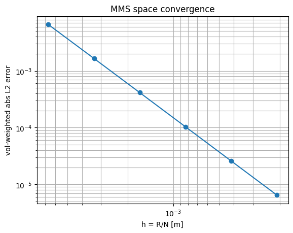
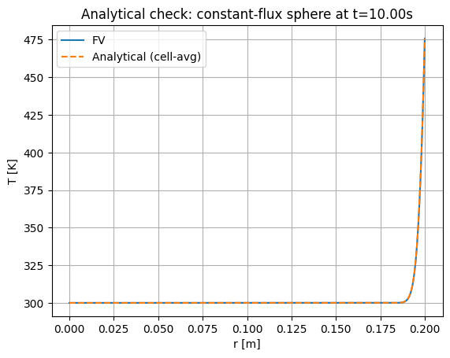

08 / Computational heat transfer / Completed team study
AE370 · Five-person team project
Verifying a layered heat-shield model for reentry conduction
Before interpreting a heat-shield temperature prediction, the team needed evidence that the conduction solver behaved correctly. I helped connect the model’s derivations, code, verification plots, and report explanations. The strongest evidence was near-second-order convergence in space and time and agreement with a separate analytical sphere solution; those checks supported an idealized material-sensitivity study.
- My contribution
- Verification and implementation writing, derivation-to-code checks, result interpretation, plotting, and report editing
- Tools
- Finite volumes · Crank–Nicolson · Manufactured solutions · Verification
- Outcome
- Near-second-order convergence; 0.0161 K maximum benchmark discrepancy

Connect a heating pulse to heat penetration
The project asked how thermal-protection material properties affect surface heating and the delayed response at the shield’s back face. A reduced-order reentry trajectory and Sutton–Graves correlation supplied the imposed surface heat flux; radial conduction carried that heat through a spherical outer layer and inner structure.
The team used conservative finite volumes on spherical shells, harmonic interface conductivity, Crank–Nicolson time integration, and a tridiagonal solve. These choices preserve the shell heat balance, handle jumps in material properties, and make repeated transient calculations practical.
Compare quantities that mean the same thing
Observed convergence orders were 1.987–1.999 in space and 1.932–1.995 in time.
Manufactured solutions provided a known temperature field and forcing against which the numerical error could be measured. Refining space and time separately checked that the implementation produced its expected order of accuracy, instead of only producing a plausible-looking temperature curve.
The analytical cross-check required another important detail: finite-volume unknowns are shell averages. The team therefore averaged the analytical solution over the same cells before comparing it with the numerical result. For a homogeneous sphere under constant inward heat flux, the reported 960-cell, 0.01 s test had a maximum discrepancy of 0.0161 K.


Choose resolution around the engineering output
Verification established the method’s numerical behavior; a separate sensitivity study then selected practical production settings. The shield’s back-face peak was prioritized because the steep surface gradient was more sensitive to the grid.
The reported spatial choice was 25,600 radial cells, the smallest tested grid whose back-face peak differed by less than 1% from the 51,200-cell reference. Choosing a multiple of 40 also aligned the 5 mm material layer with a grid face. Separate sweeps selected a 0.5 s conduction step and 0.05 s trajectory-forcing step. These criteria apply to their individual comparison studies and do not imply that every temperature history is accurate to one common tolerance.
Interpret the material tradeoff within the model’s limits
The report concludes that lower conductivity improves back-face insulation at the cost of a hotter surface, while higher conductivity transports heat inward sooner. Greater volumetric heat capacity generally lowers temperature peaks and delays back-face heating.
The model prescribes the heating and uses constant material properties without ablation or radiative cooling. These results support numerical verification and qualitative sensitivity comparisons; the absolute temperatures are not flight predictions or evidence that a material has been qualified.
My contribution: make the technical evidence defensible
I wrote portions of the implementation and numerical-reliability sections, checked methods and derivations against the code and course material, helped interpret verification results and work through inconsistencies, and contributed plots, report structure, and editing.
This work demonstrates numerical-method literacy and technical review: understanding what a benchmark actually checks, comparing cell averages consistently, distinguishing verification from physical validation, and explaining which design conclusions the evidence supports. Danfeng Ye implemented the solver and test suite; the contribution statement preserves that distinction.